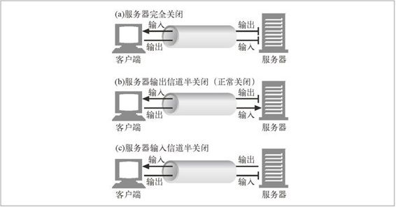

4.7 关闭连接的奥秘
连接管理——尤其是知道在什么时候以及如何去关闭连接——是 HTTP 的实用魔法之一。这个问题比很多开发者起初意识到的复杂一些，而且没有多少资料涉及这个问题。
4.7.1 “任意”解除连接
所有 HTTP 客户端、服务器或代理都可以在任意时刻关闭一条 TCP 传输连接。通常会在一条报文结束时关闭连接，1 但出错的时候，也可能在首部行的中间，或其他奇怪的地方关闭连接。
1 除非服务器怀疑出现了客户端或网络故障，否则就不应该在请求的中间关闭连接。
对管道化持久连接来说，这种情形是很常见的。HTTP 应用程序可以在经过任意一段时间之后，关闭持久连接。比如，在持久连接空闲一段时间之后，服务器可能会决定将其关闭。
但是，服务器永远都无法确定在它关闭“空闲”连接的那一刻，在线路那一头的客户端有没有数据要发送。如果出现这种情况，客户端就会在写入半截请求报文时发现出现了连接错误。
4.7.2 Content-Length 及截尾操作
每条 HTTP 响应都应该有精确的 Content-Length 首部，用以描述响应主体的尺寸。一些老的 HTTP 服务器会省略 Content-Length 首部，或者包含错误的长度指示，这样就要依赖服务器发出的连接关闭来说明数据的真实末尾。
客户端或代理收到一条随连接关闭而结束的 HTTP 响应，且实际传输的实体长度与 Content-Length 并不匹配（或没有 Content-Length）时，接收端就应该质疑长度的正确性。
如果接收端是个缓存代理，接收端就不应该缓存这条响应（以降低今后将潜在的错误报文混合起来的可能）。代理应该将有问题的报文原封不动地转发出去，而不应该试图去“校正”Content-Length，以维护语义的透明性。
4.7.3 连接关闭容限、重试以及幂等性
即使在非错误情况下，连接也可以在任意时刻关闭。HTTP 应用程序要做好正确处理非预期关闭的准备。如果在客户端执行事务的过程中，传输连接关闭了，那么，除非事务处理会带来一些副作用，否则客户端就应该重新打开连接，并重试一次。对管道化连接来说，这种情况更加严重一些。客户端可以将大量请求放入队列中排队，但源端服务器可以关闭连接，这样就会留下大量未处理的请求，需要重新调度。
副作用是很重要的问题。如果在发送出一些请求数据之后，收到返回结果之前，连接关闭了，客户端就无法百分之百地确定服务器端实际激活了多少事务。有些事务，比如 GET 一个静态的 HTML 页面，可以反复执行多次，也不会有什么变化。而其他一些事务，比如向一个在线书店 POST 一张订单，就不能重复执行，不然会有下多张订单的危险。
如果一个事务，不管是执行一次还是很多次，得到的结果都相同，这个事务就是幂等的。实现者们可以认为 GET、HEAD、PUT、DELETE、TRACE 和 OPTIONS 方法都共享这一特性。2 客户端不应该以管道化方式传送非幂等请求（比如 POST）。否则，传输连接的过早终止就会造成一些不确定的后果。要发送一条非幂等请求，就需要等待来自前一条请求的响应状态。
2 基于 GET 构建动态表单的管理者们要确保这些表单是幂等的。
尽管用户 Agent 代理可能会让操作员来选择是否对请求进行重试，但一定不能自动重试非幂等方法或序列。比如，大多数浏览器都会在重载一个缓存的 POST 响应时提供一个对话框，询问用户是否希望再次发起事务处理。
4.7.4 正常关闭连接
如图 4-19 所示，TCP 连接是双向的。TCP 连接的每一端都有一个输入队列和一个输出队列，用于数据的读或写。放入一端输出队列中的数据最终会出现在另一端的输入队列中。
图 4-19 TCP 连接是双向的
完全关闭与半关闭
应用程序可以关闭 TCP 输入和输出信道中的任意一个，或者将两者都关闭了。套接字调用 close() 会将 TCP 连接的输入和输出信道都关闭了。这被称作“完全关闭”，如图 4-20a 所示。还可以用套接字调用 shutdown() 单独关闭输入或输出信道。这被称为“半关闭”，如图 4-20b 所示。

图 4-20 完全关闭和半关闭
TCP关闭及重置错误
简单的 HTTP 应用程序可以只使用完全关闭。但当应用程序开始与很多其他类型的 HTTP 客户端、服务器和代理进行对话且开始使用管道化持久连接时，使用半关闭来防止对等实体收到非预期的写入错误就变得很重要了。
总之，关闭连接的输出信道总是很安全的。连接另一端的对等实体会在从其缓冲区中读出所有数据之后收到一条通知，说明流结束了，这样它就知道你将连接关闭了。
关闭连接的输入信道比较危险，除非你知道另一端不打算再发送其他数据了。如果另一端向你已关闭的输入信道发送数据，操作系统就会向另一端的机器回送一条 TCP“连接被对端重置”的报文，如图 4-21 所示。大部分操作系统都会将这种情况作为很严重的错误来处理，删除对端还未读取的所有缓存数据。对管道化连接来说，这是非常糟糕的事情。
图 4-21 将数据传送到已关闭连接时会产生“连接被对端重置”错误
比如你已经在一条持久连接上发送了 10 条管道式请求了，响应也已经收到了，正在操作系统的缓冲区中存着呢（但应用程序还未将其读走）。现在，假设你发送了第 11 条请求，但服务器认为你使用这条连接的时间已经够长了，决定将其关闭。那么你的第 11 条请求就会被发送到一条已关闭的连接上去，并会向你回送一条重置信息。这个重置信息会清空你的输入缓冲区。
当你最终要去读取数据的时候，会得到一个连接被对端重置的错误，已缓存的未读响应数据都丢失了，尽管其中的大部分都已经成功抵达你的机器了。
正常关闭
HTTP 规范建议，当客户端或服务器突然要关闭一条连接时，应该“正常地关闭传输连接”，但它并没有说明应该如何去做。
总之，实现正常关闭的应用程序首先应该关闭它们的输出信道，然后等待连接另一端的对等实体关闭它的输出信道。当两端都告诉对方它们不会再发送任何数据（比如关闭输出信道）之后，连接就会被完全关闭，而不会有重置的危险。
但不幸的是，无法确保对等实体会实现半关闭，或对其进行检查。因此，想要正常关闭连接的应用程序应该先半关闭其输出信道，然后周期性地检查其输入信道的状态（查找数据，或流的末尾）。如果在一定的时间区间内对端没有关闭输入信道，应用程序可以强制关闭连接，以节省资源。